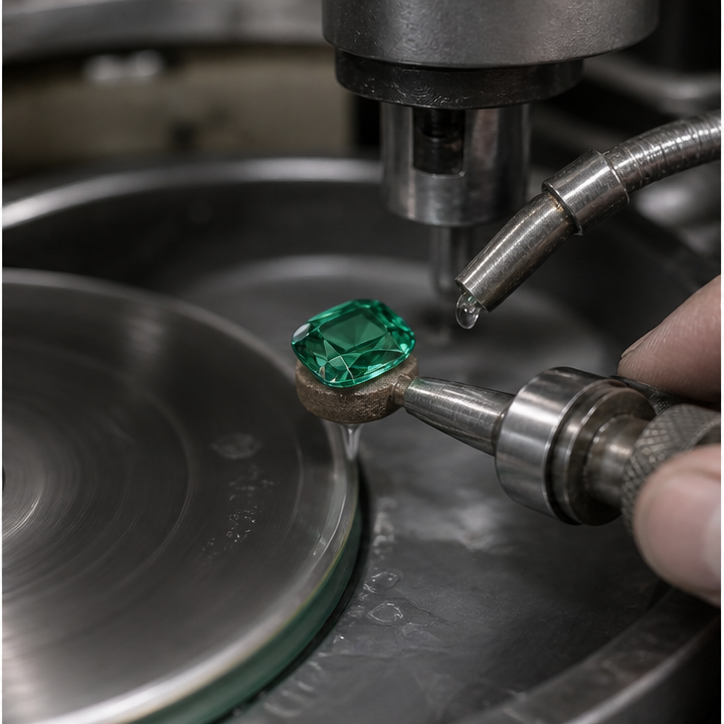
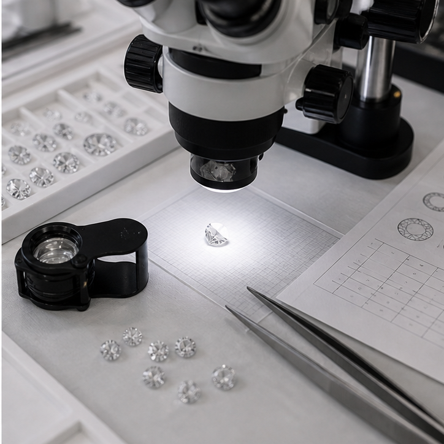

Cutting
Proportion-led shaping for character and market readiness, with decisions guided by yield, brilliance, and material integrity.
Diamond/Gemstone Cutting
Cutting and polishing are treated as both technical and aesthetic disciplines, with grading clarity built into the process. The goal is to reveal the strongest character of each stone while respecting its structure, commercial profile, and long-term value.
Proportion-led shaping for character and market readiness, with decisions guided by yield, brilliance, and material integrity.

Surface refinement that emphasizes brightness, clean edges, and the quiet precision expected in high-end finished stones.

Clear visual review supported by documentation, certification standards, and consistent professional assessment.